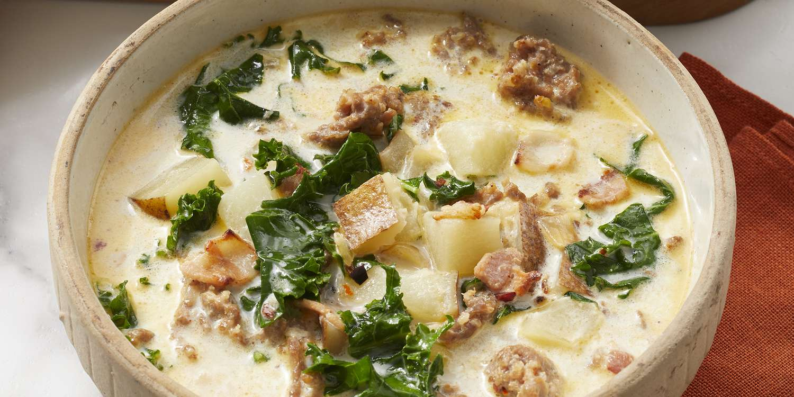

Zupa Toscana

An absolute delicious dish with a spicy kick pretaining of potatos, kale, sausage, and a nice creamy base.
Ingredients
- Potatos
- Chicken stock
- Sausage
- Diced Onions
- Kale
- Heavy Cream
Steps
- Dice onions and potatos
- Saute onions
- put in sausage and split it up
- After cooked, put in potatos
- Let it cook for 30 minutes
- After done, put in kale and cream
- Enjoy!
Go Back